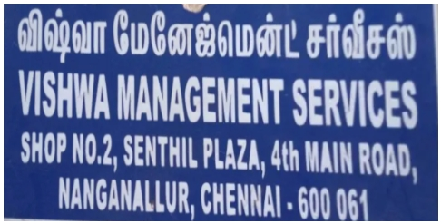

Education
Education
Expected May 2026
Master of Public Health, Concentration in Infectious Diseases Epidemiology
Cornell UniversityFocused on infectious disease surveillance, outbreak investigation, epidemiological data analysis, and public-health decision-making.
Aug 2019 - July 2023
Bachelor of Science (Hons) Medical Microbiology and Applied Molecular Biology
Sri Ramachandra Institute of Education and ResearchSpecialized in microbial pathogenesis, molecular diagnostics, and applied biomedical research
Experience
Work Experience
May 2025 - Present
Research Assistant
New York City Mayor's Office of Management and BudgetBuilt a citywide climate-risk dashboard and ROI Matrix for NYC OMB to turn scattered data into decision-ready insights for budget and resiliency planning.
Aug 2024 - Present

Student Disability Services - Proctor (Part time)
Cornell UniversityManaged and proctored accommodated exam sessions, coordinating logistics and ensuring a supportive, compliant testing environment.
Oct 2023 - Oct 2024

Monitoring and Evaluation Analyst
Vishwa Management ServicesDesigned and maintained performance dashboards and automated KPI frameworks using Excel and Python to deliver actionable insights across telecom, civil, and electrical infrastructure projects.
Feb 2025 - Current
Shot@Life Champion
Shot@Life Campaign, United Nations FoundationAdvocated for global vaccine equity by engaging with congressional representatives during the 2025 Shot@Life Summit in Washington, D.C., emphasizing U.S. support for Gavi and international immunization.
May 2023 - Oct 2023
Research Assistant
Centre for Engineered Therapeutics, Harvard Medical SchoolDeveloped calcium-phosphate orthopedic materials and 3D cell models to study bone interactions, earning recognition for innovative microfluidics research.
Aug 2019 - June 2022
Library Assistant
Sri Ramachandra Institute of Higher Education and ResearchSupported library operations by organizing biomedical collections, processing returned materials, and maintaining accurate, orderly stacks for efficient access.
Skills
My Skills
Stata
R
Python
QGis
Tableau
PowerBI
Epidemiological modelling
ArcGIS
Grant Writing
Monitoring and Evaluation
Infections Prevention and control
Adobe Photoshop
Wildfire Smoke & Air Quality Policy Brief

Purpose & Context
Examines how Canadian wildfire smoke caused extreme PM₂.₅ spikes in Pennsylvania (June 2023) and outlines urgent federal policy needs.
Impact of the Project
Quantifies deaths, economic losses, and exposure inequities, building a strong case for strengthened Clean Air Act enforcement and monitoring expansion.
Applied Skills Highlighted
- Policy translation
- Epidemiologic reasoning
- Strategic writing for policymakers
- Data storytelling
Community Garden Rx — Preventive Health Pilot

Purpose & Context
A one-year cardiometabolic prevention pilot for residents in Ithaca’s Northside Triangle, using gardening, partnerships, and culturally responsive education.
Impact of the Project
Addresses food insecurity, chronic-disease disparities, and limited green space while empowering residents through accessible community-based health strategies.
Applied Skills Highlighted
- Program design & evaluation
- Evidence integration (SCT & SEM)
- Grant writing
- Equity-focused planning

Projects
Academic
Climate Resiliency Exposure Dashboard
I designed a citywide dashboard to help OMB understand where New York City is most exposed to climate hazards—indoor heat, outdoor heat, coastal flooding, and stormwater.
College Mental Health Guide (Student Guide)
This guide was created to address rising mental-health needs among college students. It brings together national data, campus-specific experiences, and clear explanations of support systems to help students recognize when they need help and how to access it.
Microplastics & Benthic Species Mapping
This project mapped microplastic concentrations in Long Island Sound and overlaid them with the distribution of sensitive benthic species. Using 2016 baseline data and a projected 2025 scenario, the analysis visualizes how worsening pollution intersects with critical habitats.
Assessing Wildfire Smoke Impacts on Pennsylvania’s Air Quality
I examined how transported Canadian wildfire smoke degraded Pennsylvania’s air quality and highlighted the need for stronger Clean Air Act enforcement and improved monitoring systems.
Community Garden Rx – A Preventive Health Pilot in Ithaca’s Northside Triangle
A one-year preventive health initiative addressing cardiometabolic disease (CMD) risk among underserved residents in the Northside Triangle neighborhood of Tompkins County
Rapid Community Health Assessment Toolkit for Atalnta Congo Coalition
Developed a Congolese-specific community health assessment framework for the Atlanta Congo Coalition, adapting and extending the CDC’s Rapid Community Assessment to better address health access challenges shaped by migration, resettlement, and pre-migration conditions.
Multilevel Drivers of Childhood Stunting in Indonesia (2015–2025)
I analyzed how biological, social, environmental, and institutional factors collectively contribute to persistent childhood stunting in Indonesia, particularly in high-burden regions from 2015 to 2025.
Comparative Evaluation of Colistin-Susceptibility Testing in Carbapenem-Resistant Klebsiella pneumoniae Using VITEK, Colistin Broth Disc Elution, and Colistin Broth Microdilution
The study aimed to compare the results of colistin-susceptibility testing performed using the automated VITEK system, colistin broth microdilution (BMD), and colistin broth disk elution (CBDE) methods.
I'm Open to work
I’m seeking impactful opportunities at the intersection of public health, data, and design.
Contact
Contact Me
Location
Ithaca NY 14850
Message Sent Successfully!